주조산업기사 (2002-08-11 기출문제)
1과목: 금속재료
1. 용질금속이 한개한개의 원자가 되어 용매금속의 결정격자 속에 들어간 상태(고체 상태에서 융합한 상태)는?
- 공정반응
- 공석반응
- 고용체
- 금속간 화합물
(정답률: 알수없음)

2. 용접한 오스테나이트 스테인리스강의 제품을 사용 하였더니 얼마 후 용접부위 주위에 녹이 생겼다. 그 방지대책으로 옳지 않는 것은?
- 끓은 물에 넣어서 시효처리 한다.
- 용체화 열처리 한다.
- 탄소가 낮은 재료를 선택 한다.
- Ti, Nb 등이 첨가된 재료를 선택 한다.
(정답률: 알수없음)
3. Cu - Zn 합금에서 자연균열을 방지 하는 방법이 아닌 것은?
- 도료나 아연도금을 한다.
- 가공재를 185∼260℃로 응력제거 풀림한다.
- (α + β )황동 및 β 황동에 Sn을 첨가한다.
- 수은이나 그 화합물이 생기도록 한다.
(정답률: 알수없음)
4. 수소저장합금의 특징이 아닌 것은?
- 무공해연료라고 할 수 있다.
- 수소가스와 반응하여 금속수소화물이 된다.
- 수소의 흡장· 방출을 되풀이 하는 재료는 분화하게 된다.
- 수소가 방출하면 금속수소화물은 원래의 수소저장 합금으로 되돌아가지 않는다.
(정답률: 알수없음)
5. 무산소 구리에 해당되는 것은?
- OFHC
- DCOA
- TPCO
- UHFM
(정답률: 알수없음)
6. 순철의 자기변태에 해당되는 것은?
- A1 변태
- A2 변태
- A3 변태
- A4 변태
(정답률: 알수없음)
7. 철강 주물이 응고했을 때 응고 온도차에 따라 농도차이가 생기는 현상은?
- 공석
- 포석
- 편정
- 편석
(정답률: 알수없음)
8. 금속 침투법의 연결이 옳은 것은?
- 세라다이징- Si 침투
- 칼로라이징- Aℓ 침투
- 크로마이징- C 침투
- 실리코나이징- Zn 침투
(정답률: 알수없음)
9. 비중이 2.33, 용융점이 1410℃이며 고순도의 단결정으로 제작되어 사용되며 반도체 공업에 필수적인 것은?
- Si
- Zr
- Se
- Te
(정답률: 알수없음)
10. γ고용체에 대한 Fe3C의 용해 한도 곡선이며 γ고용체에서 Fe3C가 석출하기 시작하는 온도선은?
- Acm선
- A2선
- 공정선
- 포정선
(정답률: 알수없음)
11. 특수강에 첨가되는 원소의 일반적인 특성으로 옳지 않은 것은?
- Ni:인성증가
- Cr:내식성 증가
- Mo:뜨임취성 방지
- Si:취성 증가
(정답률: 알수없음)
12. Co, W, Mo의 합금으로 스텔라이트21종인 합금은?
- 하이드로 T메탈
- 모넬 메탈
- 바빗트 메탈
- 비탈리움
(정답률: 알수없음)
13. 프와송의 비가 가장 큰 금속은?
- Fe
- W
- Pb
- Ti
(정답률: 알수없음)
14. 다음 중 Dolomite 의 주성분은?
- Fe3O4 · CaC2
- PbCO3
- MgCO3 · CaCO3
- Al2O3
(정답률: 알수없음)
15. WC제조시 W분말이 C를 흡수하는 온도는?
- 150℃
- 350℃
- 650℃
- 850℃
(정답률: 알수없음)
16. 실용되고 있는 형상기억 합금계가 아닌 것은?
- Cu - Aℓ
- Ti - Ni
- Cu - Aℓ - Ni
- Cu - Zn - Aℓ
(정답률: 알수없음)
17. 소결마찰 부품의 구비 조건이 아닌 것은?
- 내마모성, 내열성이 클 것
- 열전도성, 내유성이 좋을 것
- 마찰계수가 낮고 안정될 것
- 가격이 저렴할 것
(정답률: 알수없음)
18. 순금속이 합금에 비하여 떨어지는 성질은?
- 융점
- 가단성
- 전도율
- 경도 및 강도
(정답률: 알수없음)
19. 킬드강에 속하는 것은?
- 캠을 씌워 만든 강
- 탈산을 완전히 한 강
- 탈산을 하지 않은 강
- 강괴를 만든 다음 압연하여 풀림한 강
(정답률: 알수없음)
20. 지름이 2cm인 시편으로 인장시험 한 결과 최대하중은 12000kgf이었고 시편의 지름이 1cm로 줄었을 때 파단되었으며 이 때의 하중은 8000kgf 이었다면 물체 내부에 생긴 힘은?
- 응력
- 마모량
- 소성점
- 탄성율
(정답률: 알수없음)
2과목: 금속조직
21. 금속의 결정입계를 강화시킬 수 있는 방법으로 옳지 않은 것은?
- 불순물의 양을 줄여준다.
- 고온에서 장시간 가열해준 다음 서냉시킨다.
- 불순물은 결정입자 내부로 고용시킨다.
- 조직을 미세화시킨다.
(정답률: 알수없음)
22. FCC 금속에서 슬립이 가장 쉽게 일어나는 면과 방향은?
- (111),[110]
- (100),[110]
- (101),[111]
- (111),[111]
(정답률: 알수없음)
23. 금속에 산화물이 형성될 때 산화물의 분자량을 M, 산화물의 밀도 D, 금속의 원자량 m, 금속의 밀도를 d 라 하면 용적비는?
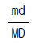
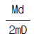
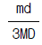
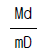
(정답률: 알수없음)
24. 주방조직으로 1차 조직에 속하는 것은?
- 베이나이트 조직
- 마텐자이트 조직
- 솔바이트 조직
- 수지상 조직
(정답률: 알수없음)
25. 그림에서 a,b선으로 표시되는 합금은?
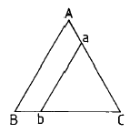
- A조성이 일정하고 BC 조성이 변하는 합금
- B조성이 일정하고 AC 조성이 변하는 합금
- C조성이 일정하고 AB 조성이 변하는 합금
- AB조성이 일정하고 C 조성이 변하는 합금
(정답률: 알수없음)
26. 연성-취성 천이온도와 관련된 설명 중 옳지 않은 것은?
- 시편의 치수가 클수록 천이온도는 높아진다.
- 단일 축응력보다는 2축 또는 3축응력이 작용하면 천이온도는 높아진다.
- 연신속도가 빠를수록 천이온도는 높아진다.
- 노치가 날카로울수록 천이온도는 낮아진다.
(정답률: 알수없음)
27. 순금속과 비교할 때 합금에서 얻어지는 일반적인 성질이 아닌 것은?
- 일반적으로 융점이 낮아지므로 주조성이 양호해진다.
- 강도 및 경도가 높아진다.
- 변태가 없는 순금속들끼리 합금하여도 열처리가 가능한 경우가 있다.
- 전기 및 열전도도가 양호해진다.
(정답률: 알수없음)
28. 알파(α)Ferrite 의 결정구조는?
- LPH
- HCP
- BCC
- FCC
(정답률: 알수없음)
29. 실용상 재결정온도를 가장 바르게 설명한 것은?
- 60분내 100％ 재결정이 끝나는 온도
- 60분내 70％ 재결정이 끝나는 온도
- 30분내 30％ 재결정이 끝나는 온도
- 30분내 10％ 재결정이 끝나는 온도
(정답률: 알수없음)
30. Fe3C의 자기변태점은 약 어느 정도인가?
- 215 ℃
- 353 ℃
- 768 ℃
- 1150 ℃
(정답률: 알수없음)
31. Gibbs의 상율공식 F = C-P+1에서 F가 의미하는 것은?
- 성분수
- 상수
- 자유도
- 물질정수
(정답률: 알수없음)
32. 마텐자이트 변태에 대한 현상의 설명 중 옳지 않은 것은?
- 온도 의존성
- 결정립 의존성
- 응력 의존성
- 변태의 비가역성
(정답률: 알수없음)
33. 체심입방격자의 격자 상수를 a라고 할 때 원자 반경 r를 구하는 식은?
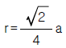
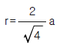
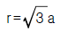
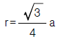
(정답률: 알수없음)
34. 그림과 같은 결정구조를 갖는 것은?
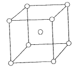
- 조밀입방격자
- 면심입방격자
- 체심입방격자
- 면심정방격자
(정답률: 알수없음)
35. Austenite를 서냉할 때 Ferrite와 Cementite의 층상조직인 Pearlite가 생성될 때 Cementite의 결정구조는?
- 사방정
- 면심입방정
- 삼사정
- 육방정
(정답률: 알수없음)
36. 50% A-B 합금의 FCC 규칙격자에서 8개가 A원자이고, 4개가 B원자일 때 단(短)범위 규칙도 σ 는?
- 0.25
- -0.125
- -0.34
- -0.87
(정답률: 알수없음)
37. 결정구조에 대한 설명 중 옳지 않은 것은?
- 체심입방정에서 {110}면은 원자밀도가 조밀하다.
- 조밀육방정의 원자 충전률은 약 0.74이다.
- 면심입방정의 배위수는 2개이다.
- 조밀육방정은 축비 c/a를 표시한다.
(정답률: 알수없음)
38. 순철의 3가지 동소체에 속하지 않는 것은?
- α
- ρ
- γ
- δ
(정답률: 알수없음)
39. 임계전단응력
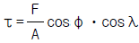
에서 Schmid 인자는?- F
- cosφ ㆍcosλ
- F/A
- A
(정답률: 알수없음)
40. 원자배열이 어느 축을 경계로 전혀 반대의 배열을 갖는 것은?
- 초격자
- 역위상구역
- 중격자
- 장범위 규칙도
(정답률: 알수없음)
3과목: 일반주조
41. 용해작업 중 가스의 흡수를 방지하기 위한 방법이 아닌 것은?
- 슬래그를 형성시켜 분위기와 접촉을 차단하는 방법
- 가스흡수를 감소시키기 위한 고온용해 및 고온주입
- 불활성 분위기 또는 진공을 이용한 방법
- 제재,교반 및 옮김 등의 용탕 처리를 가급적 적게 함
(정답률: 알수없음)
42. 균일한 단면을 가지고 비교적 가늘고 긴 관모양의 조형에 가장 효율적으로 사용되는 원형은?
- 현형
- 긁기형
- 골격형
- 분할형
(정답률: 알수없음)
43. 구리합금계 주물의 주입온도(℃)로 적당한 것은?
- 1500∼1560
- 1150∼1200
- 700∼ 760
- 500∼ 550
(정답률: 알수없음)
44. 목형 재료의 특성 중 맞지 않는 것은?
- 가공성이 양호하다.
- 가벼워 취급이 용이하다.
- 보관 중 변형이 쉽다.
- 내구성이 아주 강하다.
(정답률: 알수없음)
45. 주물사의 통기도 시험에서 2000 mL 의 공기를 1분 30초에 통과시켰을 때 통기도(mL/cm2.분)는? (단, 공기 압력차이 9cm이고, 표준시험편은 Φ 5cmx5cm)
- 약 27.74
- 약 37.74
- 약 47.74
- 약 57.74
(정답률: 알수없음)
46. 원형주물이나 원형에 가까운 모양의 주물에 용탕을 주입할 때 사용되며 코어 또는 주형표면에 용탕이 충돌되어 파손이나 과열되지 않고 주형의 접선방향으로 된 것은?
- 휠 게이트(wheel gate)
- 스텝 게이트(step gate)
- 직접 게이트(top gate)
- 아래 게이트(bottom gate)
(정답률: 알수없음)
47. 규사를 2-5 기압의 압축 공기로 분사구에서 분사 시켜 주물표면을 연마하고 청정하는 장치는?
- 샌드 슬링거
- 샌드 시프터
- 샌드 블라스트
- 샌드 밀
(정답률: 알수없음)
48. 유동성에 관련된 내용 중 틀린 것은?
- 점도가 높으면 유동성이 떨어진다.
- 과열온도가 높으면 표면장력이 증가한다.
- 표면장력이 높으면 유동성이 떨어진다.
- 점도는 합금에 따라 다르다.
(정답률: 알수없음)
49. 상자조형에서 손 조형방법의 설명이 가장 적절한 것은?
- 래머작업은 상자 가까운 곳을 다진 후 안쪽으로 향해다진다.
- 목형(원형)가까운 곳을 강하게 다져준다.
- 주물사는 수북히 쌓이게 1 회의 양으로 하도록 한다.
- 스탬핑 후 래머작업을 한다.
(정답률: 알수없음)
50. 합성수지의 특성 중 틀린 것은?
- 가볍다.
- 성형성이 우수하다.
- 기계적 강도가 약하다.
- 착색성이 양호하다.
(정답률: 알수없음)
51. 주형작업을 할 때 상형과 하형 또는 원형과 주물사가 서로 붙는 것을 막기 위하여 사용하는 것은?
- 점토제
- 코어제
- 건조제
- 이형제
(정답률: 알수없음)
52. CAD에 사용되고 있는 명령어 중 도형작성(CREATION)에 해당되는 명령어는?
- ARC
- TRIM
- BREAK
- RELIMIT
(정답률: 알수없음)
53. 용해된 용탕이 주형 내에서 응고할 때 주형면의 직각방향에 수지상정이 발달 하므로 주물의 재질이 취약 해지는 것을 방지하기 위한 것은?
- 덧붙임
- 가공여유
- 인발 기울기
- 라운딩
(정답률: 알수없음)
54. 주철 용탕의 탕면모양에서 규소 및 탄소가 적을 때 나타나는 것은?
- 거북형
- 솔잎형
- 국화형
- 대잎형
(정답률: 알수없음)
55. 주형이 팽창하여 주물사 뒤로 용금이 들어가서 응고되는 파임(scab),꾸김(buckle)의 발생 방지대책이 아닌 것은?
- 주물사의 강도를 높이고 수분함량을 조절한다.
- 첨가제 등을 적당히 첨가하여 사용 주물사 팽창을 줄인다.
- 장입재료의 관리를 철저히 하여 N2, H2 등의 양을 증가 시킨다.
- 주입온도를 낮추고 주입속도를 높인다.
(정답률: 알수없음)
56. 주형 안에 흘러 들어가서 주형의 구석구석까지 완전히 충만되는 능력은?
- 성형성
- 유동성
- 용해성
- 내화성
(정답률: 알수없음)
57. 주조품의 내부결함검출에 대한 비파괴검사법은?
- 초음파 검사법
- 에릭션검사
- 칠에어검사
- 수압검사
(정답률: 알수없음)
58. 제도의 규격 중 국제표준화 기구의 약호는?
- VSM
- JIS
- ASA
- ISO
(정답률: 알수없음)
59. 주형에 주입된 용탕이 최종응고부위에서 공동(空洞)이 생기는 것은?
- 수축공(shrinkage cavity)
- 기공(blow hole)
- 개재물(inclusion)
- 소착(sandburning)
(정답률: 알수없음)
60. 금속 용사법에 의한 모형 제작의 장점이 아닌 것은?
- 제작비를 절감할 수 있다.
- 신속한 신제품의 개발을 할 수 있다.
- 기계에 대한 투자와 숙련된 기술자가 반드시 필요하다.
- 설계된 제품에 대해 최소의 노력과 시간으로 최대효과를 거둘 수 있다.
(정답률: 알수없음)
4과목: 특수주조
61. 주물의 수축공 발생원인과 관련이 가장 적은 것은?
- 주조방안 불량
- 주조품의 설계 부적정
- 용탕의 재질 부적당
- 낮은 주입온도
(정답률: 알수없음)
62. 쇼오 프로세스(shaw process)주형에 사용되는 점결제는?
- 규산졸
- 용융실리카
- 계면활성제
- 알킨벤젠술폰산소오다
(정답률: 알수없음)
63. 쉘몰드법의 특징이 아닌 것은?
- 치수정밀도가 높고 제품표면이 우수하다.
- 조형작업에 숙련이 그다지 필요하지 않다.
- 통기성이 좋아 가스로 인한 주물불량이 적다.
- 소량생산에 적합하다.
(정답률: 알수없음)
64. 공기경화주형법에서 사용되는 점결제가 아닌 것은?
- 푸란수지
- 규산나트륨
- 페놀수지
- 리그린수지
(정답률: 알수없음)
65. 금형주조에서 금형 예열온도(℃)로 가장 적당한 것은?
- 알루미늄합금:300
- 주철:150
- 황동:400
- 알루미늄청동:150
(정답률: 알수없음)
66. 인베스트먼트 주조방안 설계시 주입구(gate) 위치로 적당치 않는 것은?
- 절단 및 가공이 용이한 곳
- 탈 왁스가 용이한 곳
- 가장 얇은 곳
- 가장 두꺼운 곳
(정답률: 알수없음)
67. 주물사에 유동성을 부여해서 수평형의 형틀 코어상자에 유입하여 자동경화시키는 조형법인 HS-process 의 특징과 거리가 먼 것은?
- 공기속에서 자연히 경화한다.
- 적은 수분으로(5-5.5% 이하)높은 유동성을 슬러리로 할 수 있다.
- 점결제로 페놀레진을 사용한다.
- 충전사로써 석영사,크롬마그네사이트 등이 활용된다.
(정답률: 알수없음)
68. 콜로이달 실리카 점결제(colloidal silica binder)의 특징으로 틀린 것은?
- 건조 후 내화물 결합강도가 에틸 실리케이트 점결제보다 우수하다.
- 주성분이 수분이며 약 70% 함유하고 있다.
- 보존 기간이 반영구적이다.
- 가수분해 후 사용한다.
(정답률: 알수없음)
69. 후란수지형 주물사의 조건이 아닌 것은?
- SiO2의 순도가 높을 것
- 알칼리분의 함유량이 높을 것
- pH가 중성일 것
- 수분이 적을 것
(정답률: 알수없음)
70. 쉘모울드 주조공정 순서를 올바르게 나열한 것은?
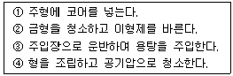
- ①→ ②→ ③→ ④
- ②→ ①→ ④→ ③
- ③→ ④→ ②→ ①
- ④→ ③→ ②→ ①
(정답률: 알수없음)
71. 인베스트먼트 주조법에 사용하는 주형용 내화물이 아닌 것은?
- 지르콘
- 산화철
- 알루미나
- 몰로카이트
(정답률: 알수없음)
72. 다이칼 주형의 특성에 관한 설명 중 맞는 것은?
- 발열성 무기점결제 공법이다.
- 다이칼슘 실리케이트를 점결제로 사용한다.
- 주탕 후 모래의 붕괴성이 CO2법보다 우수하다.
- 주형의 흡습성이 크고 잔류수분이 많다.
(정답률: 알수없음)
73. 주철주물에서 압탕의 크기를 구하고자 한다. 그림과 같은 압탕부위 형상에서 형상인자는?
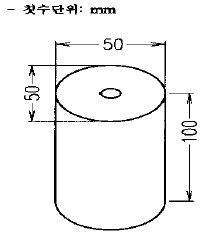
- 1
- 3
- 100
- 200
(정답률: 알수없음)
74. CO2 가스 취입법으로 옳은 것은?
- 취입시간은 길게하는 것이 좋다
- 취입압력은 낮게하는 것이 좋다
- 점결제가 많으면 취입시간은 짧다
- 취입시간은 짧게, 압력은 높게 한다
(정답률: 알수없음)
75. 다이캐스팅 주조법에서 오버 플로우(over flow)의 주 역할은?
- 공극부의 모서리나 쇳물 유입이 어려운 부분에 용탕을 끌어들이며 불순물을 포착하고 기공의 방지 역할도 한다.
- 캐비티(cavity)내의 용탕흐름 및 충전방향을 결정하는 역할을 한다.
- 랜드(land)와 피이드(feed)로 탕구에서 캐비티내에 유입하는 탕흐름의 상태를 결정하는 역할을 한다.
- 캐비티에 유입한 최초의 메탈에 의해 용이하게 폐쇄하지 않도록 설치하는 역할을 한다.
(정답률: 알수없음)
76. 주조품의 비파괴검사에 의한 결함 탐상이 아닌 것은?
- X선 투과 검사
- 침투탐상 검사
- 자분탐상 검사
- 경도 검사
(정답률: 알수없음)
77. 건조규사와 100∼200mesh 정도의 수지점결제를 배합한 합성사를 200∼300℃로 가열경화시켜 주형을 만드는 방법은?
- 자경성 주형법
- 인베스트먼트법
- 다이 캐스팅법
- 쉘모울드법
(정답률: 알수없음)
78. 인베스트먼트 주조법에서 사용되는 왁스에 대한 설명 중 맞는 것은?
- 주형건조 온도에서 연화할 것
- 응고 수축이 많을 것
- 용융 온도까지 팽창이 많을 것
- 상온에서 강할 것
(정답률: 알수없음)
79. 다음 중 왁스 성형 불량에 속하는 것은?
- Non-fill
- Burning
- Coated
- Air-vent
(정답률: 알수없음)
80. CO2 모래를 단시간에 혼련할 수 있는 혼련기의 선택 사항 중 틀린 것은?
- 혼련 후에 청소가 용이해야 한다.
- 혼련사의 유동성을 해치지 않아야 한다.
- 혼련 중 공기와 사립이 접촉하여야 한다.
- 혼련 중 모래의 온도를 상승시키지 않아야 한다.
(정답률: 알수없음)